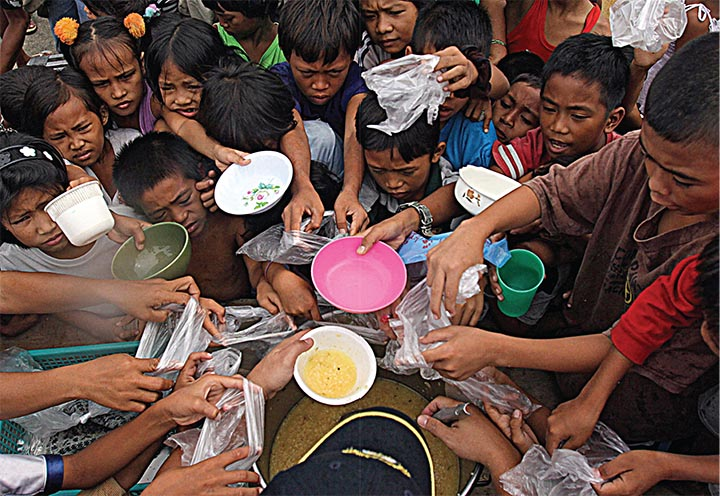

What is Food Insecurity?
Food insecurity has been defined as a lack of consistent access to enough food for an active and healthy life. In other words, there are millions of people all over the world who suffer from a shortage of food and cannot tell if they will be able to feed themselves the next day or at the end of the day. This is the basis of defining food insecurity.
